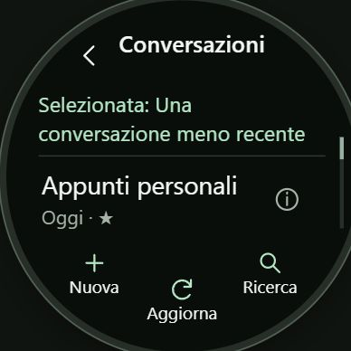
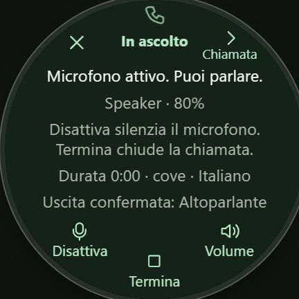
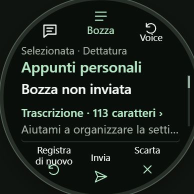
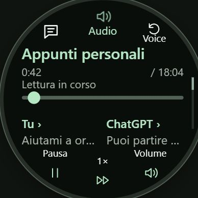

01 / SELECT
Find your conversation
Browse chats, search loaded titles, keep favorites and start a new conversation.
Galaxy Watch7 Experimental v0.4.1
Pick a conversation, talk with live Voice, dictate a message or listen to a reply. All from a Samsung Galaxy Watch7.
Experimental debug build. Setup requires a computer and ADB.

01 THE WATCH INTERFACE
Choose a chat, send your words and hear the answer. The interface is designed around a round display.

Browse chats, search loaded titles, keep favorites and start a new conversation.

Record a prompt, check its transcription and choose when to send it.

Play text replies aloud, pause playback, change speed and adjust volume.
Images are sanitized UI renderings from the October 15, 2026 interface audit. The app’s on-watch menus are currently in Italian.
02 GET STARTED
The release includes a prebuilt app and a setup helper. You do not need to compile the Android project.
Open release v0.4.1Get Voxora-0.4.1-debug-bundle.zip from GitHub Releases and verify the APK checksum.
Enable wireless debugging on your Watch, connect using Android Platform-Tools and install the APK with ADB.
After installation, use the local setup helper on your computer to transfer your own ChatGPT web-session material to the Watch.
Follow the full guide for pairing commands, session setup and troubleshooting.
Read the setup guide03 BEFORE YOU INSTALL
Voxora is a hobbyist, development-oriented project. It connects to ChatGPT through web-session behavior that can change.
Explore all controls